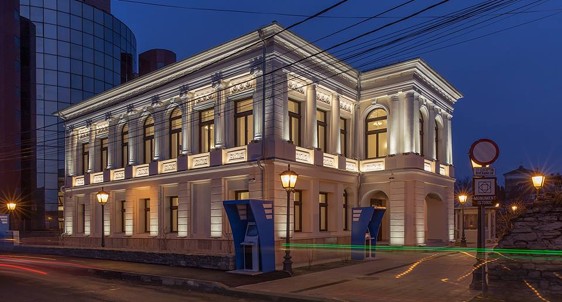

Muzeul de Istorie Naturală din Iași
Muzeul de Istorie Naturală din Iași a fost înființat la data de 4 februarie 1834, din inițiativa unui grup restrâns de membri ai Societății de Medici și Naturaliști din Iași, în frunte cu Iacob Cihac, Gheorghe Asachi, Mihail Zotta, Constantin Sturdza și Costache Negri. Este primul muzeu de acest gen înființat în Principate.
În anul 1840 s-a cumpărat pentru muzeu casa vornicului Costachi Sturdza, de pe ulița Hagioaiei, azi bulevardul Independentei nr. 16, clădire în care muzeul, împreună cu Societatea, își desfășoară activitatea și în prezent. Clădirea, cunoscută și sub denumirea de Casa Roset, a fost construită la sfârșitul secolului al XVIII-lea, în stil neoclasic, fiind astăzi unul din puținele monumente arhitectonice ale Iașului cu o structură a parterului de bolți pe arce.
Organizarea muzeului

Muzeul păstrează în colecțiile sale piese donate la începutul secolului al XIX-lea de către mitropolitul Veniamin Costachi (o colecție de oase de mamut și rinocer lânos, găsite agățate drept contragreutate la cumpăna unei fântâni din Râșca, ținutul Fălticenilor), domnitorul Mihail Sturdza (elefantul indian Gaba, achiziționat contra sumei de 135 de galbeni), Iacob Cihac, aga Alecu Balș, Gheorghe Asachi și alții.
Cabinetul de Istorie Naturală devine cunoscut marelui public și prin faptul că, în una din sălile lui, deputații din Partida Națională, în noaptea de 3/15 ianuarie 1859, au hotărât candidatura colonelului Alexandru Ioan Cuza la domnia Moldovei. Sala expune, alături de obiecte și mobilier cu valoare istorică, portretele celor care au înființat muzeul și Societatea, a personalităților care au activat la muzeu de-a lungul timpului: Iacob Cihac, Grigore Cobălcescu, Anastasie Fătu, Petru Poni etc.
În prezent colecțiile muzeului numără peste 300.000 exemplare, cele mai valoroase fiind colecțiile de Insecte, Moluște, Amfibieni, Reptile, Păsări, Minerale și Plante. În 1840, momentul mutării în clădirea actuală, patrimoniul muzeal consta în: 1.500 minerale, 2.844 de plante, 3.000 de moluște și insecte, 795 de vertebrate, 92 de schelete. Cea mai veche piesă din colecția muzeului este elefantul indian, care a fost cumpărat în anul 1835 de domnitorul Grigore Mihail Sturdza și adus la palat, fiind ulterior donat muzeului. În anul 2000 inventarul muzeului număra peste 350.000 de piese, dintre care 3.500 piese de patrimoniu (5.290 expuse și celelalte în depozit).

Colectii